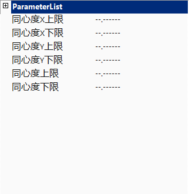

根据矩形的上边距、下边距、左边距、右边距，计算出待检测物体外边框所组成的矩形与内边框所组成的矩形之间的同心度。
常应用于矩形内外框合规性检测。
计算同心度的示意图如图1所示：其中Y1为上边距，Y2为下边距，X1为左边距，X2为右边距。
同心度
同心度
同心度

同心度上限、同心度下限
对于输出参数同心度的有效范围进行设定，距离值上限、距离值下限的可取值范围为[0, 999999.999999]，另可设置为"–.——“,表示对同心度上限或下限不进行限定。
使用距离值上限或/和距离值下限对同心度数值的有效范围进行设定后，执行此测量工具。
当输出结果同心度在设定的有效范围内时，显示工具执行结果成功；否则，显示工具执行结果失败。
同心度X上限、同心度X下限
针对同心度X有效范围限定，可取值范围为[-999999.999999, 999999.999999]
其他与同心度上/下限设置方法相同。
同心度Y上限、同心度Y下限
针对同心度Y有效范围限定，可取值范围为[-999999.999999, 999999.999999]
其他与同心度上/下限设置方法相同。
| 现象描述 |
|---|
| 输入可以是线段到线段距离工具的距离值结果，double类型数据，输出的同心度结果是double类型。 |
| 参数名称 | 参数说明 |
|---|---|
| 上边距 | 外框矩形上边线与内框矩形上边线之间的距离。 |
| 下边距 | 外框矩形下边线与内框矩形下边线之间的距离。 |
| 左边距 | 外框矩形左边线与内框矩形左边线之间的距离。 |
| 右边距 | 外框矩形右边线与内框矩形右边线之间的距离。 |
| 同心度X上限 | 取值范围[-999999.999999,999999.999999]，输出参数同心度X的上限阈值。 |
| 同心度X下限 | 取值范围[-999999.999999,999999.999999]，输出参数同心度X的下限阈值。 |
| 同心度Y上限 | 取值范围[-999999.999999,999999.999999]，输出参数同心度Y的上限阈值。 |
| 同心度Y下限 | 取值范围[-999999.999999,999999.999999]，输出参数同心度Y的下限阈值。 |
| 同心度上限 | 取值范围[0,999999.999999]，输出参数同心度的上限阈值。 |
| 同心度下限 | 取值范围[0,999999.999999]，输出参数同心度的下限阈值。 |
| 高级界面 | 无 |
| 参数名称 | 参数说明 |
|---|---|
| 同心度 | 外框矩形中心与内框矩形中心的距离偏差。 |
| 同心度X | 外框矩形中心与内框矩形中心在X轴方向上的距离偏差。 |
| 同心度Y | 外框矩形中心与内框矩形中心在Y轴方向上的距离偏差。 |
| 执行结果 | 工具执行结果，执行成功显示“OK”，执行失败显示“NG”，同监视窗口的执行结果参数。 |
| 执行时间 | 工具执行时间。 |
参见“\Samples\同心度计算.gvp”。